Zuerst siehst du die Stadtmauer. Dann kommen Bäume, Wasser, alte Wege und eine Brücke über den großen Fluss.
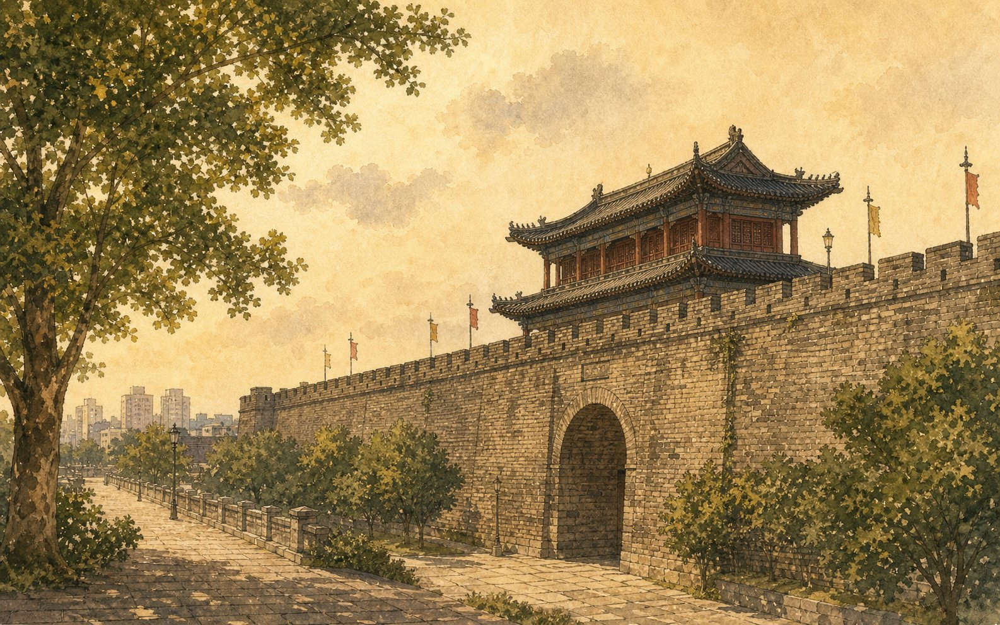
Nanjing spricht nicht laut. Auf der Stadtmauer spürst du zuerst die alten Steine. Danach gehst du unter Platanen, hörst Wasser am Qinhuai-Fluss und siehst später die große Brücke über den Jangtse. Die Stadt zeigt sich langsam, Schicht für Schicht.
Acht Stationen durch Nanjing: Stein, Baum, Treppe, Licht, Wasser, Brücke, See und ein stiller Weg.
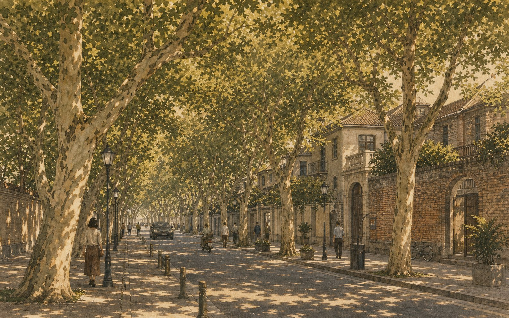
Unter den Platanen ist die Straße kühl. Licht fällt durch die Blätter, und die Stadt wird langsamer.
Die Platanen sind in Nanjing mehr als Bäume. Sie machen aus der Straße einen langen grünen Raum. Im Sommer geben sie Schatten; im Herbst wird der Weg golden.
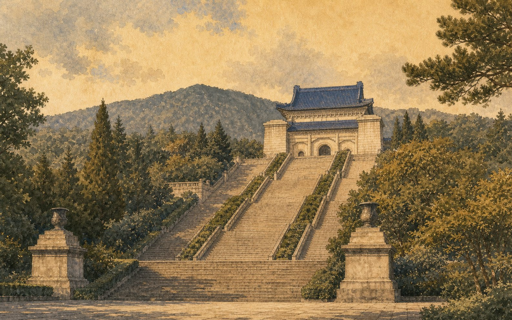
Viele Stufen führen den Berg hinauf. Beim Gehen wird Geschichte nicht abstrakt, sondern im Körper spürbar.
Sun Yat-sen war Arzt und Revolutionär. Das Mausoleum liegt am Zijin-Berg. Die blauen Dächer, die Stufen und die Bäume machen den Ort ruhig und weit.
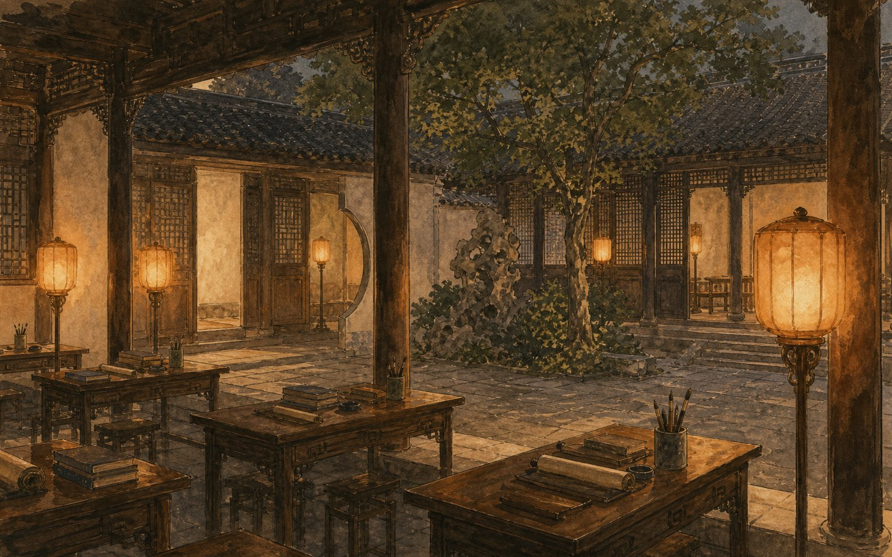
In der Nähe des Qinhuai-Flusses denkt man an junge Menschen, die lange gelernt haben. Licht liegt auf Tischen und Holz.
Hier machten früher viele Menschen schwere Prüfungen. Auf der Seite bleibt der Ort ruhig: keine langen Texte, keine großen Worte, nur Tische, Lampen und die Erinnerung an Lernen.
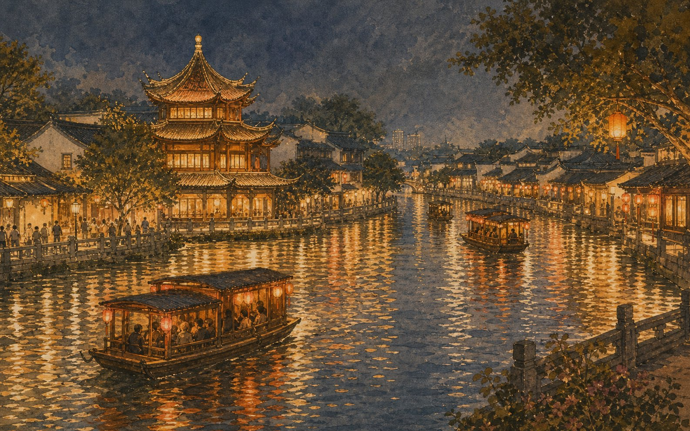
Am Abend liegt Licht auf dem Wasser. Man hört Stimmen, Schritte und kleine Boote. Nanjing wird weich.
Der Konfuzius-Tempel und der Qinhuai-Fluss gehören zusammen. Hier gibt es Geschichte, Essen, Licht und Wasser. Die Seite nutzt die Szene als Stimmung, nicht als laute Werbung.
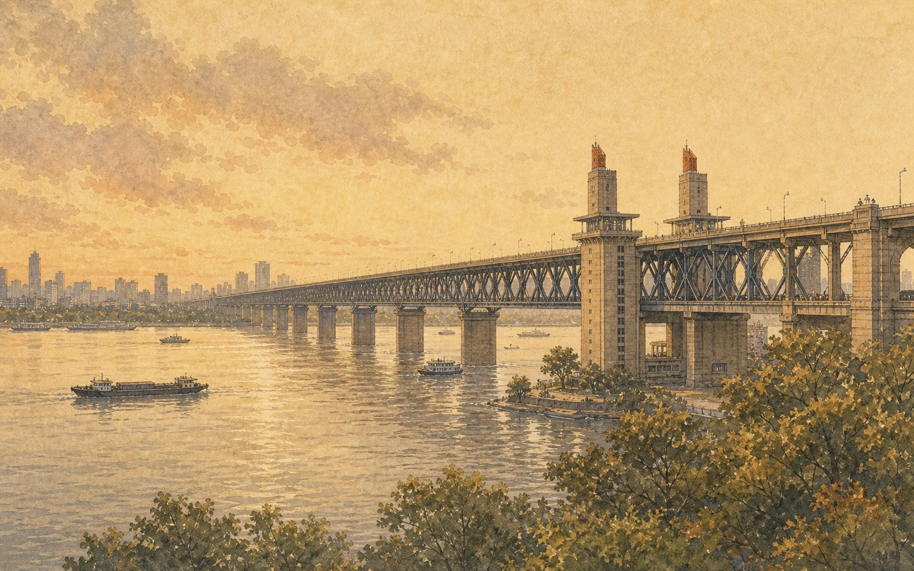
Der Jangtse ist breit. Die Brücke macht die Stadt größer und verbindet alte Wege mit moderner Erinnerung.
Die Brücke ist kein kleines Motiv. Sie zeigt den Maßstab des Flusses. In der Nanjing-Geschichte steht sie auch für eine moderne Zeit und für den Blick über das Wasser.
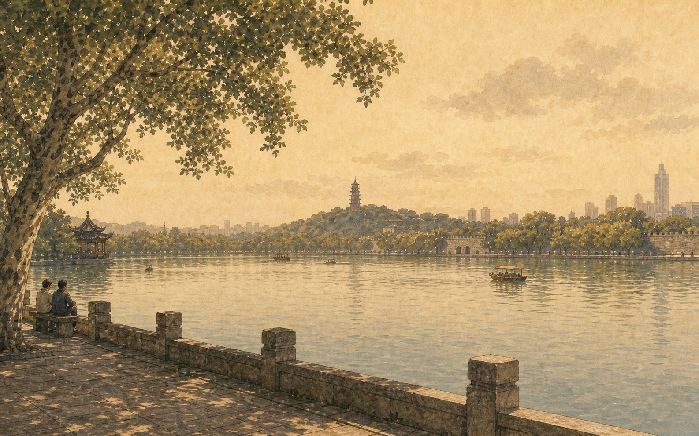
Am See sitzt die Stadt still. Wasser, Bäume und ein weiter Himmel geben nach der Geschichte wieder Luft.
Der Xuanwu-See liegt nahe bei der Stadtmauer. Menschen gehen spazieren, sitzen am Ufer oder schauen einfach auf das Wasser. Der See macht Nanjing langsam.
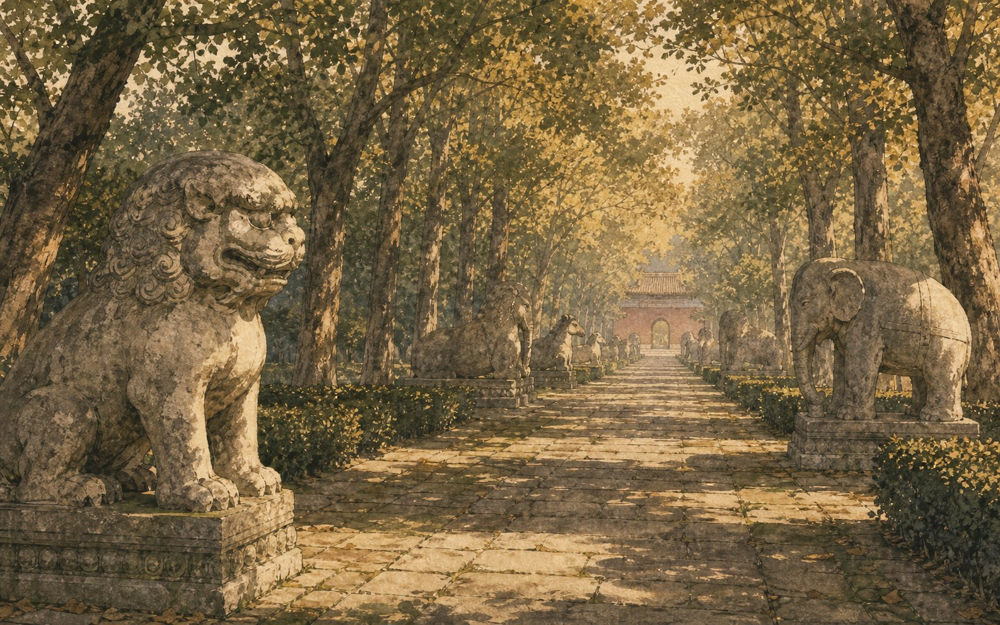
Zwischen Steinfiguren und Bäumen wird die Stadt sehr leise. Du gehst nicht schnell. Der Weg hat Zeit.
Die Steinfiguren am Weg sind nicht für ein lautes Bild da. Sie geben der Seite einen ruhigen Schluss der Orte: Nanjing als alte Stadt, die nicht alles sofort erklärt.
Nanjing schmeckt oft klar: heiße Suppe, kühle Ente, vorsichtige Teigtaschen und ein süßer Kuchen auf der Straße.
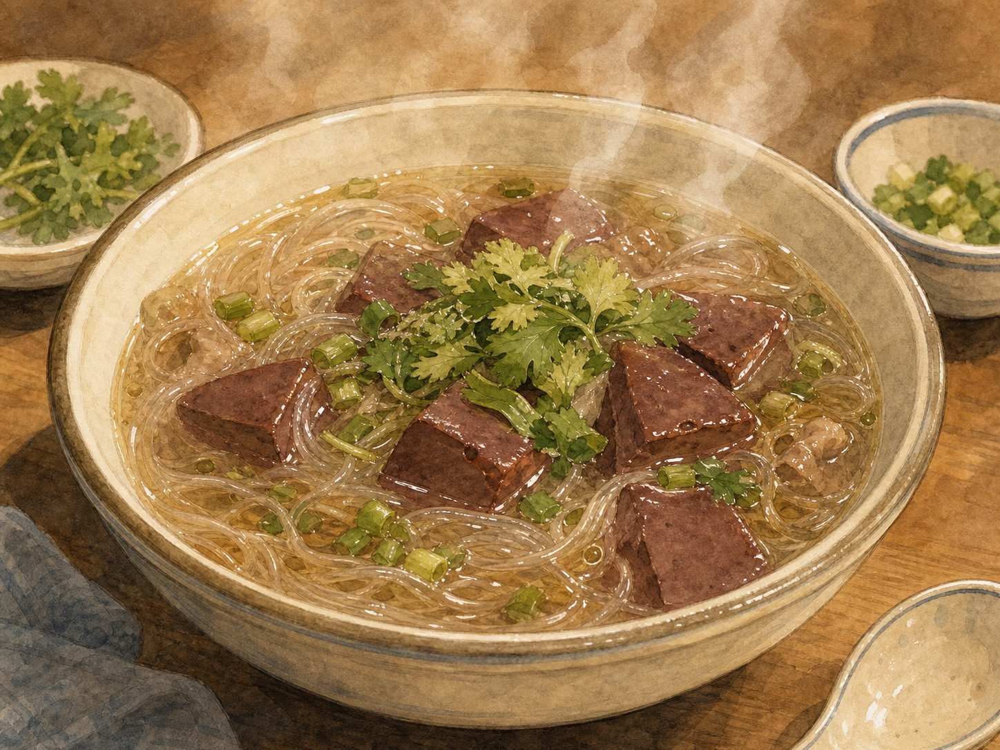
Die Suppe ist heiß und klar. Glasnudeln liegen in der Schale, dazu kleine dunkle Stücke Entenblut und grüne Kräuter.
Man hält die Schale mit beiden Händen. Der Dampf wärmt das Gesicht, und die Nudeln sind weich. Für viele Menschen ist das ein sehr typischer Geschmack von Nanjing.
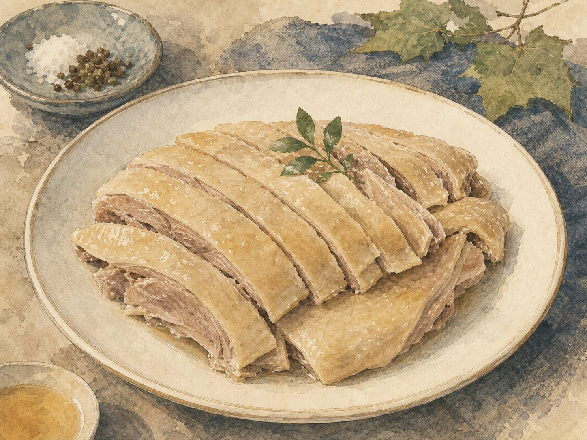
Salz-Ente ist kühl, fein und nicht schwer. Die hellen Scheiben liegen ruhig auf dem Teller.
Nanjing liebt Ente. Diese Ente ist nicht süß und nicht laut gewürzt. Sie schmeckt klar, salzig und frisch. Darum passt sie gut zu einer Stadt, die leise bleibt.
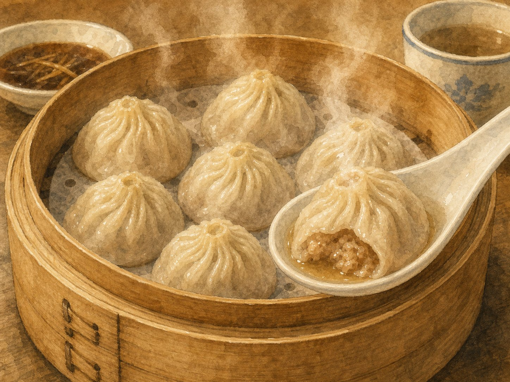
Iss langsam. In der kleinen Teigtasche wartet heiße Brühe. Ein Löffel hilft, damit nichts verloren geht.
Die Teigtasche sieht klein aus, aber innen ist Suppe. Man beißt vorsichtig, trinkt ein wenig Brühe und isst dann weiter. So wird Essen zu einer kleinen Handlung.
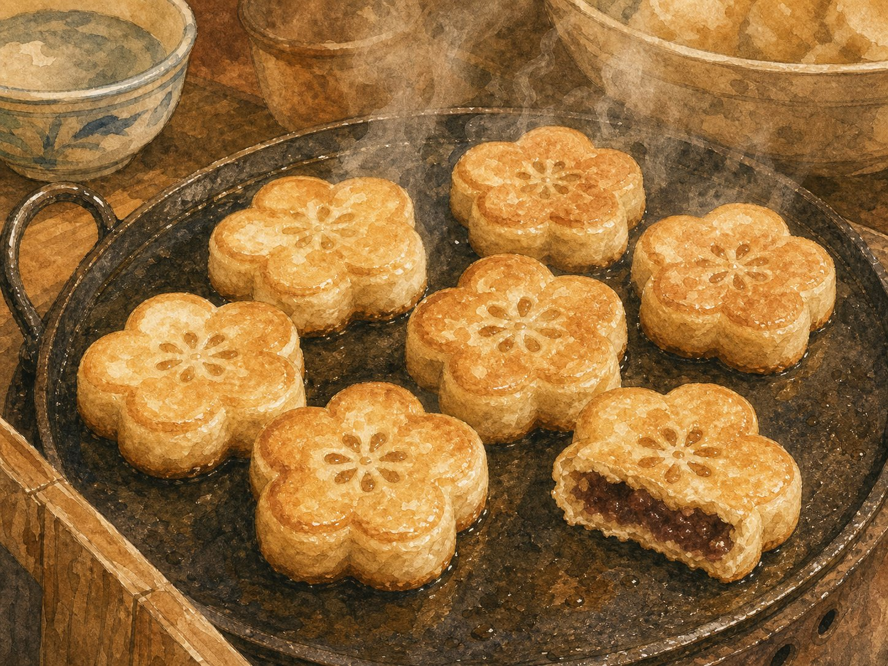
Auf der Straße duftet es süß. Die kleinen Kuchen haben die Form einer Blume und sind innen warm.
Die Pflaumenblüte ist ein Symbol von Nanjing. Der Kuchen macht daraus etwas Einfaches für die Hand: heiß, süß und freundlich nach einem langen Weg.
Kurze Wörter für Wege, Wasser, Essen und Erinnerung. Tippen zum Umklappen.
Diese Sätze sind kurz. Du kannst sie in Nanjing benutzen.
Wo ist die Stadtmauer?城墙在哪里？
Ich möchte zum Qinhuai-Fluss gehen.我想去秦淮河。
Die Suppe ist sehr heiß.这碗汤很烫。
Bitte langsam essen.请慢慢吃。
Der See ist ruhig.这个湖很安静。
Wie komme ich zur Jangtse-Brücke?长江大桥怎么走？
Drei kleine Fragen. Wähle eine Antwort.
1. Was gibt Nanjing im Text zuerst Tiefe?
2. Was liegt in den Suppen-Teigtaschen?
3. Welche Bäume geben den Straßen Schatten?
Nanjing bleibt wie ein langer Weg unter Bäumen. Du hörst Wasser, Schritte und leise Stimmen. Die Stadt zeigt nicht alles sofort, aber sie bleibt bei dir.